LORE-KV: Monte Carlo Estimation
for KV-Cache Eviction
Most eviction methods ask which memory looked important while reading the prompt.
LORE-KV asks which memory will matter while answering.
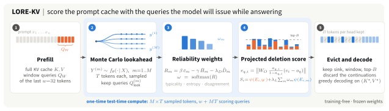
TL;DR. Before evicting, LORE-KV samples a few short continuations from the frozen model, treats their query states as Monte Carlo samples of the queries it will issue while answering, and keeps the tokens whose deletion would most change the attention output under those queries. The continuations are discarded; nothing is trained.
The query-reference mismatch
Eviction happens once, after prefill and before any answer token exists, so the queries that will read the cache are unknown. What should a token's importance be measured against?
Score with the last prompt queries $Q_W$
SnapKV, Ada-KV, CriticalKV and AnDPro rank tokens by how the last $w$ prompt tokens attend to them. When answer-time queries differ, tokens the answer needs are evicted, and the loss grows with the mismatch.
Score with sampled answer-time queries
Short continuations sampled from the model itself give a Monte Carlo estimate of the queries it will issue. Tokens are ranked by the projected change of the attention output their deletion would cause under those queries.
Method
Algorithm 1 of the paper. Steps 2-4 are a one-time test-time computation of $M\times T$ sampled tokens and $w+MT$ scoring queries; decoding then runs on the compressed cache at the same cost as any method at budget $B$.
Prefill
Run the prompt $X=(x_1,\dots,x_n)$ once, keeping the full cache $K,V$ and the window queries $Q_W$ of the last $w=32$ tokens. The attention sink and the window form the protected set.
Monte Carlo lookahead Eq. 1
Sample $M$ continuations of $T$ tokens from the frozen model and record their query states:
Reliability weights Eqs. 2-4, 10
The centered score separates how atypical a sampled token was from how uncertain its context was, and has zero conditional mean. Trajectories are weighted softly:
where $\hat D_m$ is the standardized cosine disagreement of trajectory $m$'s queries with the others. LORE-KV /E uses $(\beta,\gamma,\lambda_D)=(1,1.3,0)$, LORE-KV /D uses $(1,1,0.3)$.
Projected deletion score Eqs. 5-7
Removing token $i$ and renormalizing changes the attention output in closed form. Its impact is measured in the residual stream through the head's output projection, then aggregated over the window and the weighted trajectories:
Evict and decode Eq. 8
Each KV head keeps the protected set and its top-$B$ tokens by $S_i$. The continuations are discarded, and the answer is decoded greedily from the compressed cache.
Walk-through
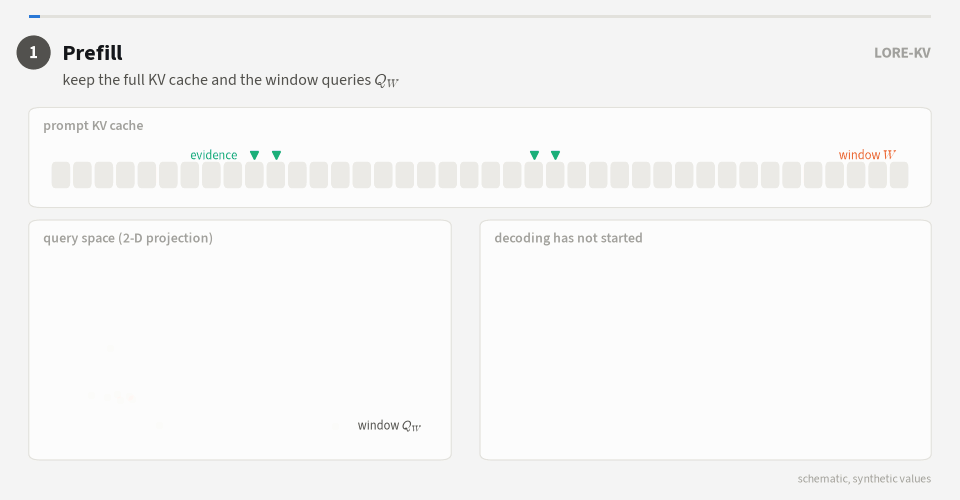
Hyperparameters
| Symbol | Meaning | Default |
|---|---|---|
| $w$ | prompt observation window | 32 |
| $M,\,T$ | lookahead trajectories, tokens per trajectory | 4, 8 |
| $\lambda_L$ | weight of the lookahead term in $S_i$ | 1.0 |
| $(\beta,\gamma,\lambda_D)$ | reliability coefficients (/E; /D uses (1, 1, 0.3)) | (1, 1.3, 0) |
| $\epsilon$, chunk | renormalization guard, adjacent-token grouping | $10^{-6}$, 4 |
| $\alpha,\kappa,\tau,\lambda_k,\lambda_v$ | plug-ins: robust aggregation, adaptive budgets, diversity selection | off |
Results
All methods share budgets, observation window, chunk size and selector, on four dense and two hybrid-attention backbones. Gains are largest under tight budgets and shrink as the budget grows.
| LongBench average, B = 128 | Full cache | CriticalKV | AnDPro | LORE-KV /E | LORE-KV /D |
|---|---|---|---|---|---|
| Mistral-7B-Instruct-v0.2 | 42.51 | 38.42 | 38.96 | 40.28 | 40.21 |
| Llama-3.1-8B-Instruct | 49.29 | 44.62 | 46.06 | 46.11 | 46.27 |
| Qwen2.5-14B-Instruct | 49.37 | 43.47 | 45.49 | 48.16 | 48.24 |
| Ministral-3-8B-Instruct-2512 | 49.67 | 44.79 | 46.74 | 47.30 | 47.24 |
| Qwen3.5-9B (hybrid) | 52.97 | 46.30 | 46.89 | 48.49 | 48.57 |
| Gemma-4-12B-it (hybrid) | 27.27 | 19.74 | 20.21 | 20.85 | 20.93 |
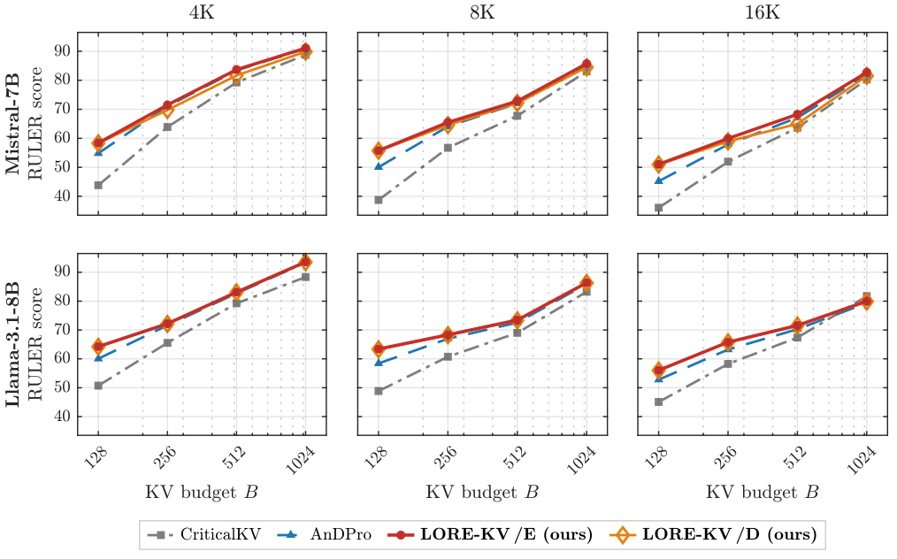
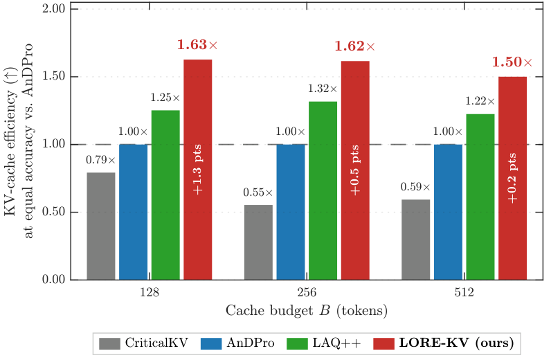
Long context: RULER at 64K and 128K
| Llama-3.1-8B, B = 128 | 64K | 128K |
|---|---|---|
| CriticalKV | 34.82 | 30.28 |
| AnDPro | 49.62 | 39.40 |
| LORE-KV /E | 57.75 | 51.05 |
| LORE-KV /D | 57.29 | 51.04 |
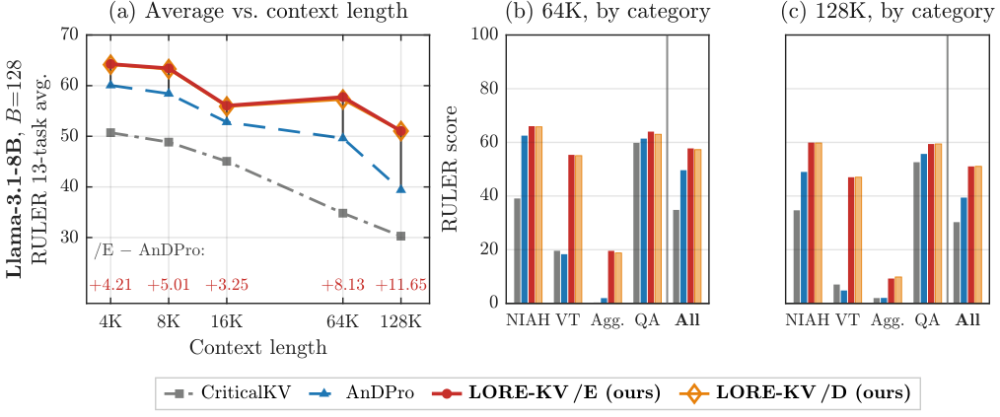
Why it works
Mechanism analyses use the deployed scoring code and, retrospectively, the queries the model really issued while answering with the full cache.
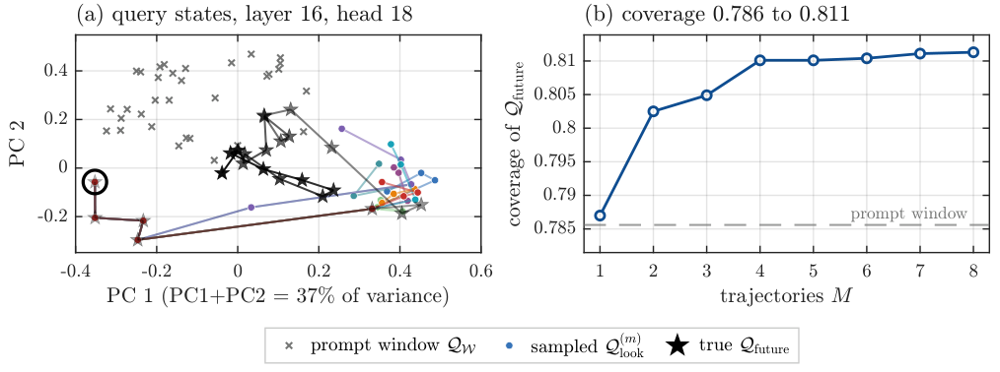
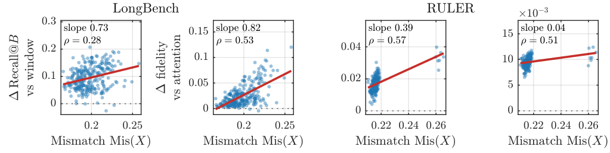
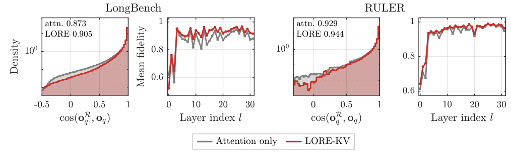
More analyses
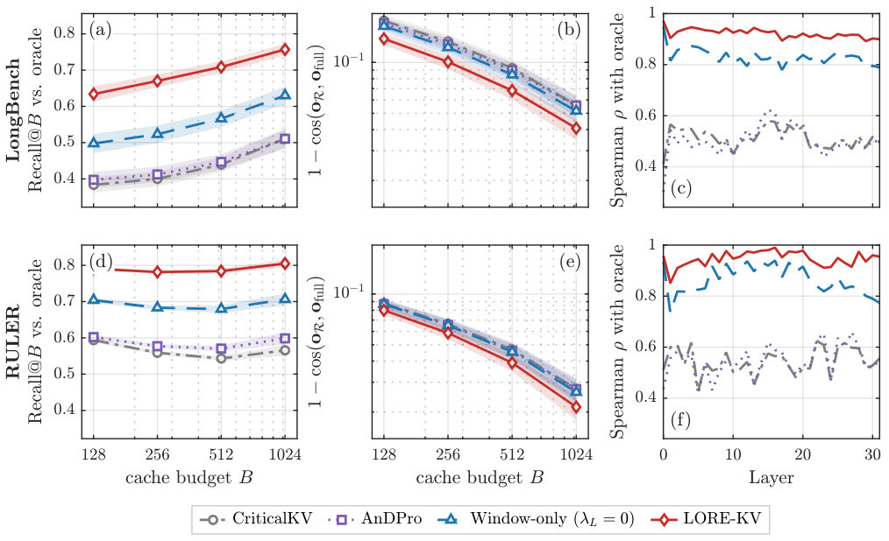
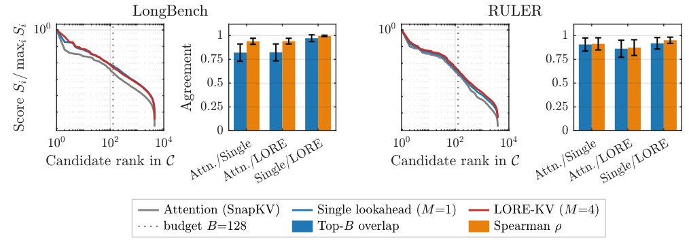
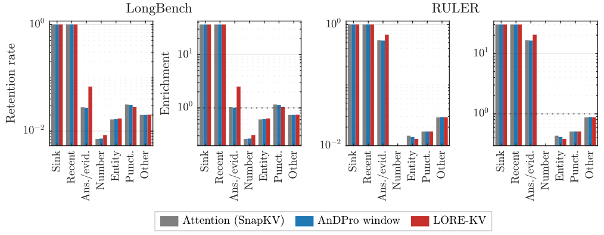
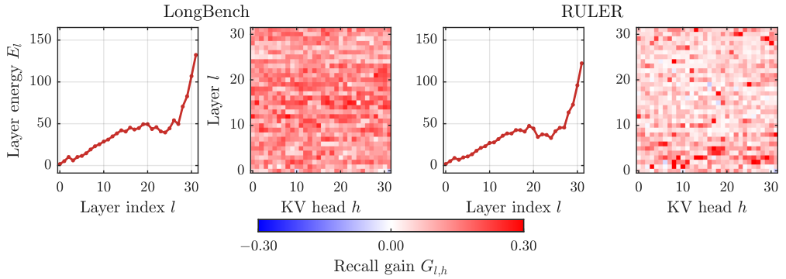
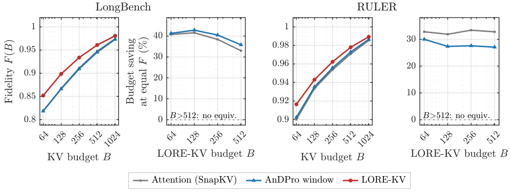
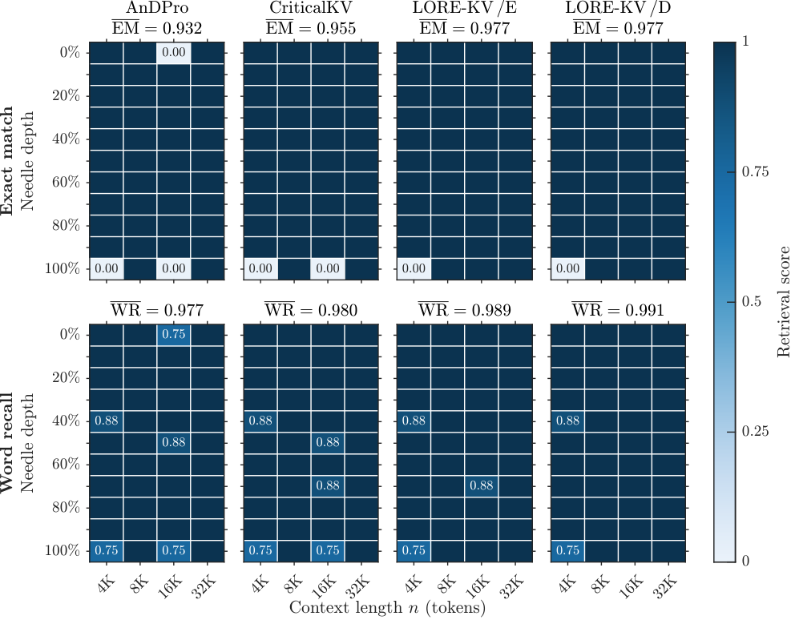
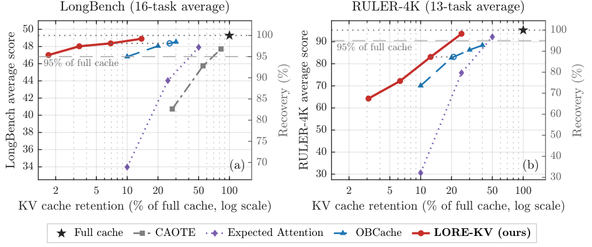
Cost
At a fixed budget every method has the same decoding memory and per-token cost. LORE-KV adds a one-time lookahead and scoring step, 1.46-2.77× AnDPro's per-sample time; it stays ahead of AnDPro scoring the same continuations at every matched lookahead-token budget.
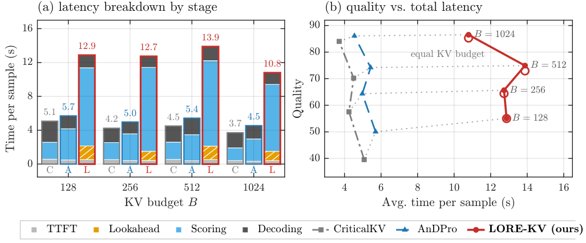
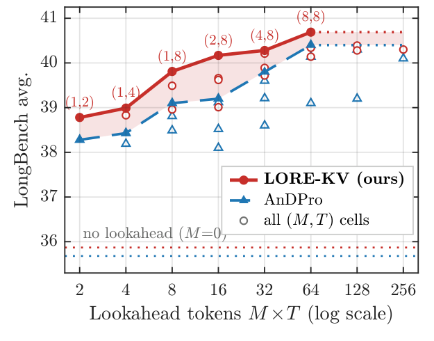
Run it
Every experiment is one config on one benchmark. See the repository README for installation and the map from each table and figure to its config.
git clone https://github.com/AhsanBilal7/train_free_kv.git lorekv && cd lorekv
uv venv --python 3.11 .venv && source .venv/bin/activate
uv sync && make install
# LORE-KV /E on LongBench with Mistral-7B, budgets 128-1024
python scripts/sweep.py --benchmark LongBench --config config/lorekv-ent-unif-topk.confLimitations
- Every request pays a one-time lookahead and scoring overhead.
- Eviction is irreversible, and cross-head and cross-layer interactions are not modeled.
- Gains shrink at large budgets and coexist with task-level regressions.
- On hybrid backbones the per-trajectory cache copy can exceed device memory at very long context.
Citation
@article{bilal2026lorekv,
title = {Monte Carlo Estimation for {KV} Cache Eviction},
author = {Bilal, Ahsan and Mohsin, Muhammad Ahmed and Umer, Muhammad and Raza, Wajih Hassan
and Asad, Atta Ul and Kwon, Young D. and Valko, Michal and Hougen, Dean F.},
journal = {arXiv preprint arXiv:2610.07643},
year = {2026}
}